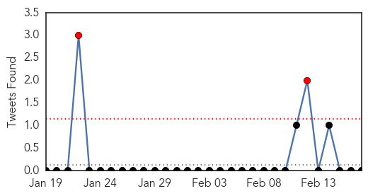
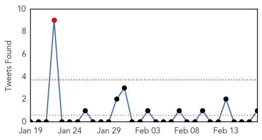
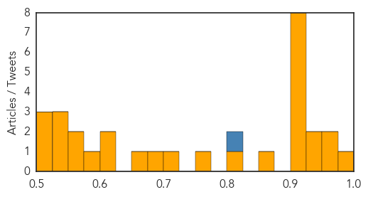

Influenza
30-Day Web Trend
0 alerts, 0 warnings

30-Day Twitter Trend
3 alerts, 0 warnings

Article Locations

Article Confidences

Top Articles:
- 0.998
- University of Arizona Flu Evolution Study Findings May Alter History And Textbooks BioNews Texas
- 0.993
- Human infection with avian influenza A(H7N9) virus – update
- 0.985
- Developments and Trends in Influenza Therapeutics (Technical Insights) -- LONDON, Feb. 17, 2014 /PRNewswire/ --
- 0.980
- Human H7N9 Infection Reported In Malaysia
- 0.972
- Research Shows New Flu Viruses Often Arise In Domestic Animals
- 0.972
- Research Shows New Flu Viruses Often Arise In Domestic Animals
- 0.935
- Will China’s H7N9 Epidemic Be Comparable to SARS?
- 0.934
- Eight more H7N9 cases reported in China
- 0.923
- Study of Flu Evolution Challenges Conventional Wisdom
- 0.906
- Flu could 'spread like wildfire', leading expert warns
- 0.901
- Threat of global disease outbreaks spawns 27-nation pact
Top Tweets:
-
No tweets found for Feb 17, 2014
Unknown
30-Day Web Trend
0 alerts, 7 warnings
30-Day Twitter Trend
1 alerts, 0 warnings

Article Locations
Article Confidences
Top Articles:
- 0.985
- Saudi man dies from Sars-type virus
- 0.972
- First case of pig virus confirmed in P.E.I.
- 0.966
- Kalamazoo Central TB case: The odds of infection and 7 other things to know
- 0.935
- Producers working to stop spread of deadly pig virus
- 0.932
- Canadian Swine Health Board continues to monitor virus
- 0.917
- Chicago Tribune
- 0.917
- Chicago Tribune
- 0.917
- Chicago Tribune
- 0.917
- Chicago Tribune
- 0.917
- Chicago Tribune
- 0.917
- Chicago Tribune
- 0.917
- Chicago Tribune
- 0.917
- Chicago Tribune
- 0.866
- Explosion shakes central Istanbul, gas leak suspected
- 0.822
- In Brief: Glenwood Y collects stuffed animals
- 0.763
- Pig virus reaches Maritimes
- 0.701
- Cities ban poultry trading as H7N9 cases rise, Others news, Health News, AsiaOne YourHealth
- 0.695
- Vietnamese bird flu outbreak spreads to eight provinces
- 0.669
- Lourdes sending student nurses abroad
- 0.612
- Cervical cancer could be prevented by an HIV drug
- 0.605
- 35 patients selected for overseas treatmentSaudi Arabia
- 0.583
- UN warns of food shortages in the Sahel
- 0.563
- Time you stopped popping those antibiotics
- 0.554
- HIV drug used to reverse effects of virus that causes cervical cancer
- 0.537
- AIDS drug kills off HPV virus that causes cervical cancer
- 0.534
- The struggle for food in the Central African Republic — SOS Children
- 0.527
- In Sierra Leone, WE HAVE SEEN MUNAFA IN FREE HEALTH CARE -Informationand Communications Minister, Alhaji Alpha Kanu: Sierra Leone News
- 0.519
- Oncologist allays cancer fears
- 0.517
- Hours to save the world: New software program aims to stop deadly pandemic spread
- 0.511
- Mangalore: FMMC hosts CME on HIV
Top Tweets:
- 0.807
- RT: Mid-2013/14 season flu vaccine eff, Navarre, ESP. Overall adj VE in prev lab-confirmed flu 24%( (95% CI: −14 to 50) h…